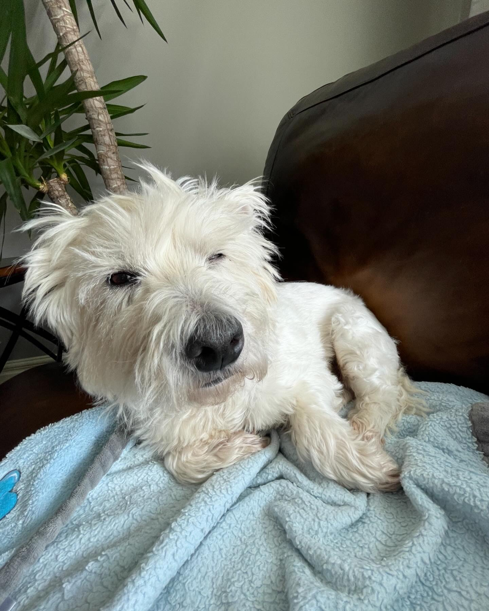
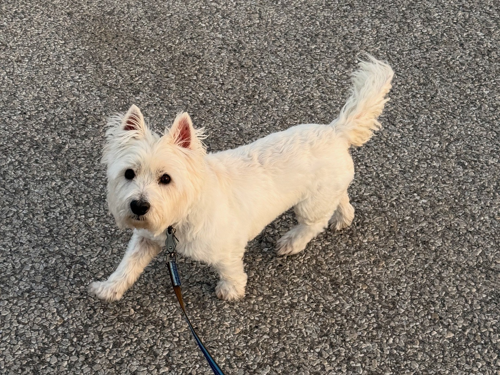
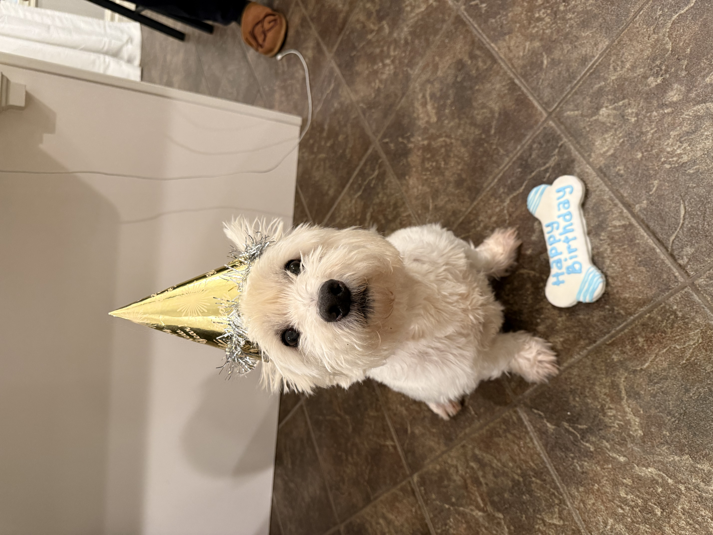

Odin in Action
  
Loading Odin's age...
He is a very good boy. He's smarter than many humans, loves to sniff things, and vacuums fallen food off the floor. He fancies a nap in the sunbeam on the hardwood floor on a lazy afternoon. He will paw at you and make a sneezing sound when he's waiting for scritches. He will curl up in the middle of your bed like a croissant if you let him. His best friend is his cousin Meeka, a pretty Mini Goldendoodle with long eyelashes.
Does Odin like the water?
Not even slightly! He'll watch diligently while you swim, but will be sad if you bring him in.
Where does he sleep?
He'll usually curl up on one of his three beds, or the ottoman in the living room, but sometimes he'll ask to sleep in Matthew's bed.